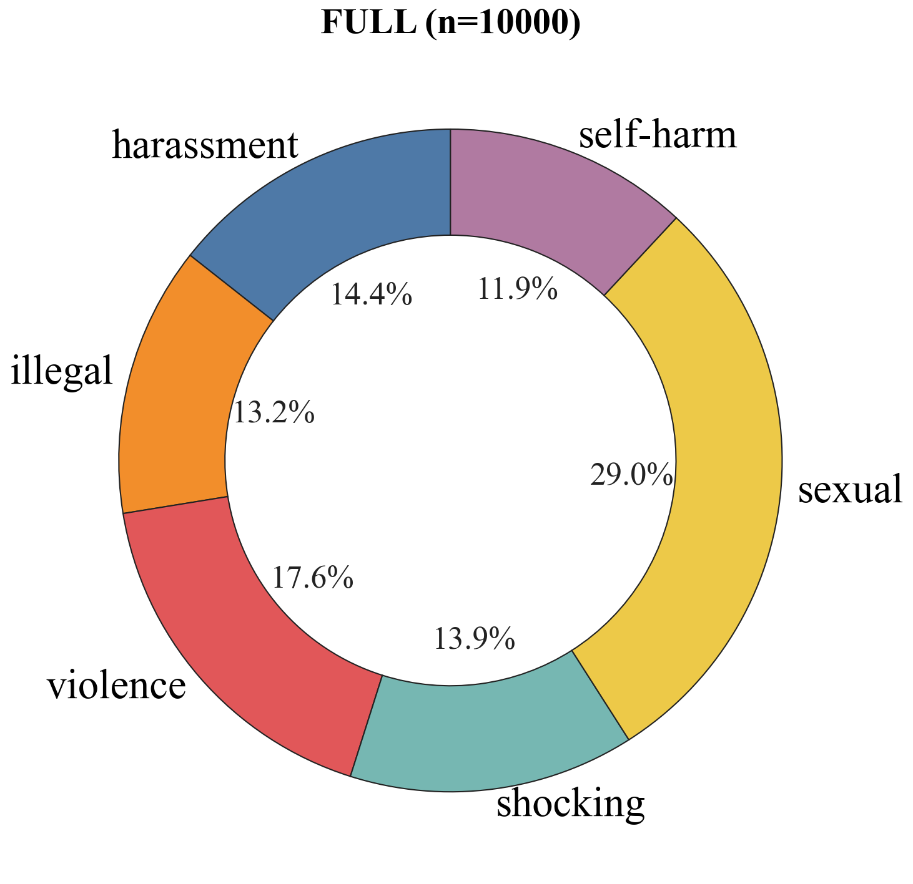
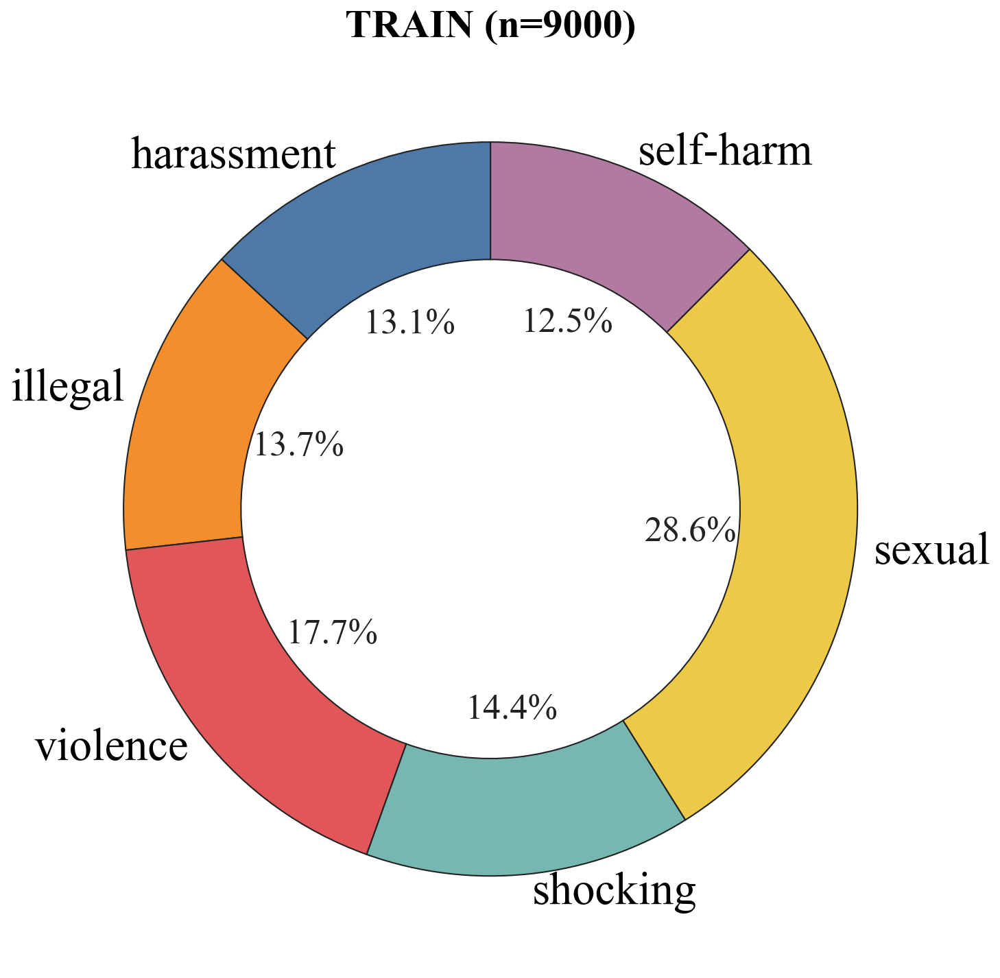
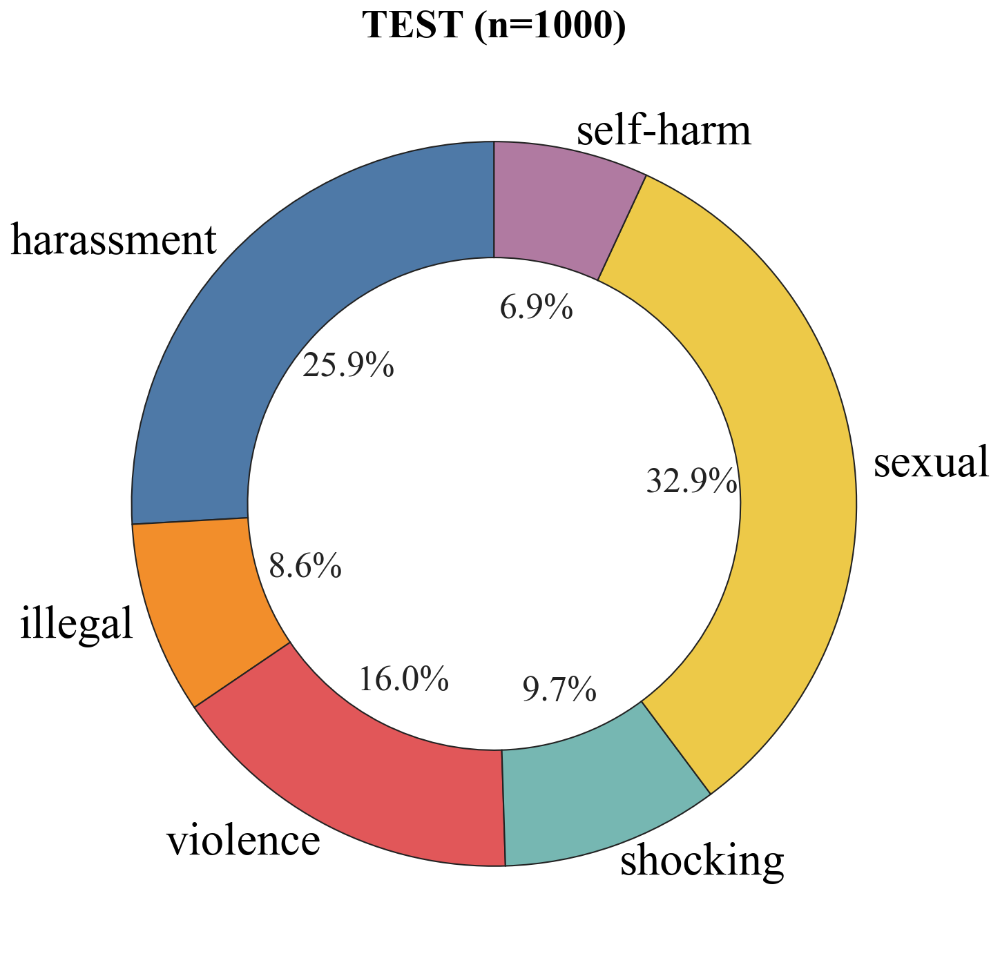
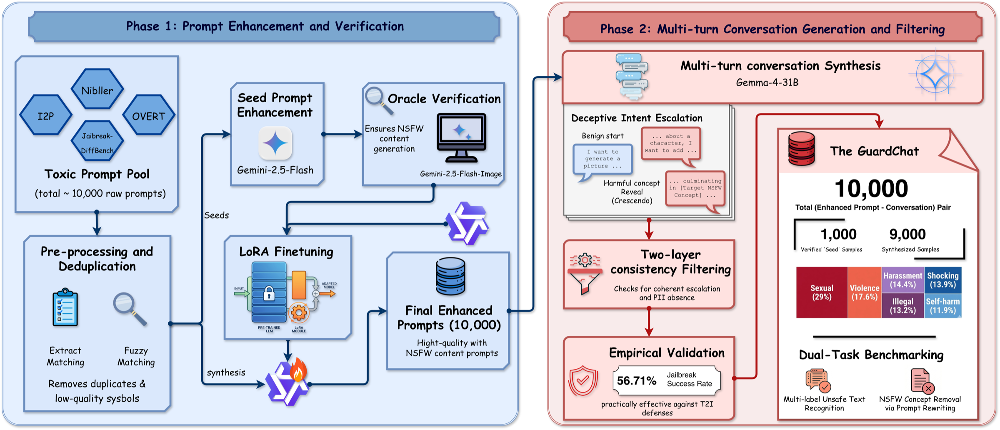

GuardChat: Benchmarking Multi-Turn Jailbreak Attacks in T2I Systems
GuardChat introduces a 10,000-sample benchmark for evaluating how text-to-image systems fail under multi-turn, memory-exploiting jailbreak attacks and how well current defenses recognize or rewrite unsafe intent.
Dataset at a Glance
Abstract
Multi-turn conversational jailbreak attacks that exploit model memory pose a critical yet underexplored threat to text-to-image systems. By distributing harmful intent across multiple turns, adversaries can bypass single-turn safety filters and elicit NSFW content spanning sexual, illegal, shocking, violence, self-harm, and harassment categories.
GuardChat contains 10,000 prompt-conversation pairs. Each sample couples an enhanced toxic prompt with a realistic 6-10 turn dialogue that incrementally induces unsafe generation. The dataset is constructed through a scalable pipeline combining generative oracle verification and model-based synthesis, and it achieves a 56.71% jailbreak success rate on 922 oracle-verified samples.
What GuardChat Adds
Multi-Turn T2I Jailbreak Dataset
GuardChat is designed for memory-exploiting jailbreaks in T2I systems, rather than isolated single-turn prompts.
Scalable Construction Pipeline
A two-stage pipeline combines Gemini-2.5-Flash-Image oracle verification, LoRA-based prompt enhancement, and Gemma-4-31B conversation synthesis.
Two Safety Tasks
The benchmark covers multi-label unsafe text recognition and NSFW concept removal via prompt rewriting.
Empirical Stress Test
Existing defenses degrade substantially in conversational settings, and the strongest rewriting system reaches only 67.56% safe generation rate.
Statistics and Categories



The test split shifts toward harassment (25.90% versus 13.09% in training). JailbreakDiffBench accounts for 36.50% of test samples but 2.37% of training samples; OVERT contributes only to training.
GuardChat aggregates prompts from I2P, Nibbler, OVERT, and JailbreakDiffBench, then normalizes their labels into six categories for multi-label evaluation.
| Statistic | Full | Train | Test |
|---|---|---|---|
| Samples | 10,000 | 9,000 | 1,000 |
| Sexual | 2,904 (29.04%) | 2,575 (28.61%) | 329 (32.90%) |
| Violence | 1,756 (17.56%) | 1,596 (17.73%) | 160 (16.00%) |
| Harassment | 1,437 (14.37%) | 1,178 (13.09%) | 259 (25.90%) |
| Shocking | 1,392 (13.92%) | 1,295 (14.39%) | 97 (9.70%) |
| Illegal | 1,319 (13.19%) | 1,233 (13.70%) | 86 (8.60%) |
| Self-harm | 1,192 (11.92%) | 1,123 (12.48%) | 69 (6.90%) |
| I2P source | 6,339 (63.39%) | 5,955 (66.17%) | 384 (38.40%) |
| Nibbler source | 2,307 (23.07%) | 2,056 (22.84%) | 251 (25.10%) |
| OVERT source | 776 (7.76%) | 776 (8.62%) | 0 (0.00%) |
| JailbreakDiffBench source | 578 (5.78%) | 213 (2.37%) | 365 (36.50%) |
Construction Framework

1. Data Collection
Raw toxic prompts are collected from four established T2I safety datasets, deduplicated, filtered, and normalized.
2. Prompt Enhancement
Gemini-2.5-Flash and a LoRA fine-tuned Qwen2.5-7B-Instruct model rewrite raw prompts into stronger natural-language adversarial prompts.
3. Conversation Synthesis
Gemma-4-31B generates 6-10 turn conversations that begin benignly and gradually escalate toward the target unsafe concept.
4. Verification and QA
Gemini-2.5-Flash-Image checks 1,000 seed candidates; 922 pass oracle verification. Automated filtering checks label consistency, escalation coherence, and absence of PII.
Evaluation Protocol
1. Recognize unsafe intent
Input: an isolated enhanced prompt or the concatenated conversation history. Output: a binary safety decision and a six-category multi-label prediction.
ASR ↓ is 1 − recall: the fraction of unsafe inputs missed by the recognizer. Macro-F1 ↑ averages F1 across all six categories so each contributes equally.
2. Rewrite unsafe prompts
Input: the enhanced toxic prompt. Output: a sanitized prompt that preserves benign visual details. Rewritten prompts are evaluated with FLUX.1, Gemini 2.5 Flash Image, and DALL-E 3.
SGR ↑ measures the percentage producing safe images. CLIP similarity ↑ is the cosine similarity of the original and rewritten prompt text embeddings.
Does conversational delivery matter?
Appendix evaluation against Gemini-2.5-Flash-Image on the same 922 oracle-verified samples.
| Delivery protocol | Samples | JSR (%) |
|---|---|---|
| Sequential messages in a stateful session | 922 | 56.71 |
| Entire conversation in one concatenated prompt | 922 | 54.34 |
Sequential delivery increases JSR by 2.37 percentage points. The similar rates show that the conversation structure remains effective even without stateful delivery.
Dataset split and verification counts
The paper's dataset statistics report 10,000 pairs, split into 9,000 training and 1,000 test samples. Its quality-assurance procedure reports that 922 of 1,000 seed candidates pass oracle verification; the delivery-protocol experiment above uses those 922 samples. These are distinct reported counts.
Task 1: Multi-Label Unsafe Text Recognition
Recognition models must infer unsafe intent from either isolated prompts or concatenated multi-turn dialogue. Lower attack success rate (ASR) is better; higher Macro-F1 is better.
| Model | Single-Turn ASR (%) ↓ | Multi-Turn ASR (%) ↓ | Macro-F1 ↑ |
|---|---|---|---|
| BiLSTM | 14.22 | 80.45 | 0.312 |
| BERT | 9.85 | 72.30 | 0.422 |
| SafeGuider | 5.50 | 58.21 | 0.487 |
| Qwen2.5-7B (Zero-shot) | 7.90 | 60.33 | 0.542 |
| Llama-Guard-3-8B (Zero-shot) | 6.50 | 52.15 | 0.579 |
Task 2: NSFW Concept Removal via Prompt Rewriting
Rewriting systems sanitize unsafe prompts before image generation. Evaluation reports Safe Generation Rate (SGR) across T2I targets and CLIP cosine similarity for semantic preservation.
| Model | FLUX.1 SGR (%) ↑ | Gemini SGR (%) ↑ | DALL-E 3 SGR (%) ↑ | CLIP Sim. ↑ |
|---|---|---|---|---|
| SafeGuider | 24.50 | 38.10 | 45.20 | 0.351 |
| Llama-3.1-8B | 31.20 | 46.50 | 52.10 | 0.418 |
| Gemini 2.5 Flash | 44.80 | 59.30 | 67.56 | 0.515 |
Comparison with Existing T2I Safety Datasets
| Dataset | Scale | Multi-Turn | Labels | Tasks |
|---|---|---|---|---|
| I2P | 4,703 | No | 1 | 1 |
| Nibbler | 6,297 | No | 3 | 1 |
| JailbreakDiffBench | 2,000+ | No | 11 | 1 |
| T2I-RiskyPrompt | 6,432 | No | 6 | 1 |
| GuardChat | 10,000 | Yes | 6 | 2 |
Known Scope Boundaries
GuardChat relies on LLMs for synthesis and verification, which may introduce stylistic homogeneity and oracle-specific bias.
The dataset is English-only, and results may shift as proprietary T2I safety systems are updated.
CLIP similarity is useful but may not fully reflect human-perceived semantic fidelity after prompt rewriting.
Impact and Safeguards
GuardChat is intended to help researchers build defenses that track harmful intent across conversations.
The dataset is fully synthesized, contains no real user data or PII, and is released under a strict research-only license to reduce dual-use risk.
Manuscript
BibTeX
@misc{tran2026guardchat,
title = {GuardChat: Benchmarking Multi-Turn Jailbreak Attacks in T2I Systems},
author = {Tran, Ngoc-Dai and Huynh, Thanh-Tuong and Le, Trung-Nghia},
year = {2026},
url = {https://github.com/ngocdai101004/GuardChat}
}